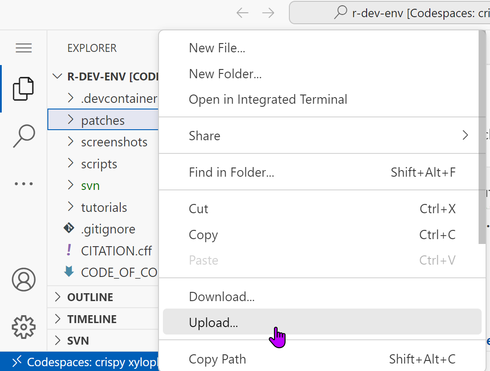

Contributing to the R Project
Heather Turner
University of Warwick
November 16, 2023
The R Project
- R originally first developed in 1992
- R Core Team established in 1997
- Use of R grown massively; issue of sustainability
- Most core developers are volunteers
- Many near/post retirement or in insecure positions
- R can use your help! E.g. posts on The R Blog
Translation
Localization
By default, messages, warnings and errors are shown in the current locale.
The language can be changed with Sys.setLanguage:
Translation via Weblate
The Weblate instance at https://translate.rx.studio provides a user-friendly interface for contributing translations.
Register through website to start translating (real name encouraged).
The R Project for Statistical Computing

- Most packages have two components for strings in R and C files
- base (R GUI) is for strings in the Windows GUI
Languages tab
- 17 languages in current release of R, e.g., Spanish (43% translated)
- New languages, e.g., Catalan (34% translated)
Language-specific pages
Select a component with less than 100% translation to start translating!
Component pages
- “Unfinished” can include “fuzzy” translations (English source has changed) or marked as “needs editing” in Weblate
Translation interface
Enter the translation and “Suggest” (if unsure) or “Save and continue” (if confident).
Sidebar shows alerts and any relevant terms from glossary.
Suggestions
- “Accept” will accept suggestion, save and continue
- “Accept and edit” accept suggestion, save and stay
Machine translation
- “Clone to translation” will copy and mark as “needs editing”
- Editing will uncheck the “needs editing box”
- “Accept” will accept suggestion, save and continue
Source String information
Source string location, e.g. src/main/datetime.c:581
String approval
Dedicated reviewers (leaders of translation teams) can approve translations in Weblate
- Approved translations can only be changed by reviewers
- Helps ensure translation quality and consistency
- Avoids spam translations
- Only Brazilian Portuguese team using so far
Guidance
https://contributor.r-project.org/translations/
General conventions
Language-specific guidelines
- Spanish: neutral version of Latin American dialect
- Catalan:
- start with automatic translation from Softcatalà
- follow Softcatalà guidelines
R Bugs
Bugzilla
Bugs and wishlist items are tracked through R’s Bugzilla https://bugs.r-project.org
Contributors can help by:
- Reviewing bug reports
- Debugging
- Discussing/proposing a fix
An account is required to post comments or share files
- Email bug-report-request@r-project.org from address you want to use
- Briefly explain why you want an account
Documentation
Browsing Bugzilla


Reviewing Documentation Bug Reports
Is this a valid documentation bug?
- Does the report still apply to the development version of R (R-devel)?
- R is version-controlled in a Subversion (SVN) repository: https://svn.r-project.org/R/
- Can search for R documentation file (
.Rd) in GitHub mirror of SVN repo https://github.com/r-devel/r-svn/
- Does the bug reporter correctly understand the behaviour?
- Is the documentation currently wrong/unclear?
Add a comment if you think the bug should be closed, with a brief explanation.
If it is a bug what action should be taken?
- Propose improvements in a comment or patch
- Review existing patch
Note: each comment sends email to all of R Core, avoid “+1” comments!

- “Rd syntax” is defined in Writing R Extensions
- The Rd file can found in the trunk of the R SVN repository: https://svn.r-project.org/R/trunk/src/library/base/man/c.Rd
Proposing updates in a comment
It can be clearer to propose specific changes, rather than describe the change in words.
Code can be included in comments via a markdown code chunk.
For example, this .Rd snippet proposes documentation for the vfont argument of ?text (cf. Bug 17791)
```
\item{vfont}{\code{NULL} for the current font family, or a character
vector of length 2 for \code{\link[grDevices]{Hershey}} vector fonts.
The first element of the vector selects a typeface and the second element
selects a style. Ignored if \code{labels} is an expression.}
```Reviewing Documentation Patch
- Text:
- Are changes correct?
- Is the updated text clearer?
- Examples:
- Do they work?
- Are they worthwhile?
- Formatting: is R documentation markup correct?
Add comment to confirm patch is fine, or suggest improvements.
Proposing updates in a comment
It can be clearer to propose specific changes, rather than describe the change in words.
Code can be included in comments via a markdown code chunk.
For example, this .Rd snippet proposes documentation for the vfont argument of ?text (cf. Bug 17791)
```
\item{vfont}{\code{NULL} for the current font family, or a character
vector of length 2 for \code{\link[grDevices]{Hershey}} vector fonts.
The first element of the vector selects a typeface and the second element
selects a style. Ignored if \code{labels} is an expression.}
```Modifying/Creating a Patch
Patch files are created by modifying a copy of the R source code, which is version controlled with Subversion.
A few options:
- Install Subversion, edit file locally, use
svn diffto create a patch file- Local settings (e.g. indentation, EOL), can create noise.
- Edit file in the browser on GitHub mirror https://github.com/r-devel/r-svn/, create patch by adding
.diffto commit URL- Not so good for modifying a patch
- Use the R Dev Container https://github.com/r-devel/r-dev-env
R Dev Container, https://github.com/r-devel/r-dev-env
The R Dev Container is a GitHub Codespace that provides a development environment - VS Code running on Linux - that can be run in the browser.
Start a new Codespace
Checkout a copy of the R sources
Working from an Existing Patch
Download the patch from Bugzilla
Upload patch to Codespace
Create new patches directory
Upload patch downloaded from Bugzilla

Apply patch
Continuing in VS Code terminal, change to directory with SVN checkout
Apply the uploaded patch file
$ svn patch ../patches/patch-c-rd
U src/library/base/man/c.Rd
> applied hunk @@ -44,8 +44,8 @@ with offset -1
> applied hunk @@ -81,6 +81,12 @@ with offset -1The line numbers in the patch are off by 1 due to changes since the patch was created.
Create an updated patch
The file can be opened in VS code for further editing
After making changes create a new patch, e.g.
The file can be downloaded from the codespace to attach with a comment on Bugzilla
Updated patch
Index: src/library/base/man/c.Rd
===================================================================
--- src/library/base/man/c.Rd (revision 85035)
+++ src/library/base/man/c.Rd (working copy)
@@ -43,8 +43,8 @@
\code{c} is sometimes used for its side effect of removing attributes
except names, for example to turn an \code{\link{array}} into a vector.
\code{as.vector} is a more intuitive way to do this, but also drops
- names. Note that methods other than the default are not required
- to do this (and they will almost certainly preserve a class attribute).
+ names. Note that \code{c} methods other than the default are not required
+ to strip attributes (and they will almost certainly preserve a class attribute).
This is a \link{primitive} function.
}
@@ -66,7 +66,7 @@
attribute-free vectors.
}
\examples{
-c(1,7:9)
+c(1, 7:9)
c(1:5, 10.5, "next")
## uses with a single argument to drop attributes
@@ -87,9 +87,8 @@
## but rather
c(ll, d = list(1:3)) # c() combining two lists
+## descend through lists:
c(list(A = c(B = 1)), recursive = TRUE)
-
-c(options(), recursive = TRUE)
c(list(A = c(B = 1, C = 2), B = c(E = 7)), recursive = TRUE)
}
\keyword{manip}These are the changes that were made in the end by R Core member, Sebastian Meyer (view on GitHub mirror).
Code
Reviewing Code Bug Reports
Similar to reviewing documentation bugs, but more potential actions:
- Add a reprex (minimal, reproducible example) if necessary
- Analyse the bug
- Identify the root cause
- Identify the correct behaviour
Bug analysis is often the most time-consuming part
Bug analysis example: bug 17616
https://bugs.r-project.org/show_bug.cgi?id=17616
Good behaviour
Call:
lm(formula = uptake ~ C(Treatment, "contr.treatment"), data = CO2)
Coefficients:
(Intercept) C(Treatment, "contr.treatment")chilled
30.64 -6.86Bad behaviour
Call:
lm(formula = uptake ~ C(Treatment, contr.treatment), data = CO2)
Coefficients:
(Intercept) C(Treatment, contr.treatment)2
30.64 -6.86Isolate the problem
Check if the bad behaviour comes from the C function
[1] nonchilled nonchilled nonchilled nonchilled nonchilled nonchilled nonchilled nonchilled
[9] nonchilled nonchilled nonchilled nonchilled nonchilled nonchilled nonchilled nonchilled
[17] nonchilled nonchilled nonchilled nonchilled nonchilled chilled chilled chilled
[25] chilled chilled chilled chilled chilled chilled chilled chilled
[33] chilled chilled chilled chilled chilled chilled chilled chilled
[41] chilled chilled nonchilled nonchilled nonchilled nonchilled nonchilled nonchilled
[49] nonchilled nonchilled nonchilled nonchilled nonchilled nonchilled nonchilled nonchilled
[57] nonchilled nonchilled nonchilled nonchilled nonchilled nonchilled nonchilled chilled
[65] chilled chilled chilled chilled chilled chilled chilled chilled
[73] chilled chilled chilled chilled chilled chilled chilled chilled
[81] chilled chilled chilled chilled
attr(,"contrasts")
2
nonchilled 0
chilled 1
Levels: nonchilled chilledDebugging C()
debugging in: C(Treatment, contr.treatment)
debug: {
if (isFALSE(as.logical(Sys.getenv("_R_OPTIONS_STRINGS_AS_FACTORS_"))))
object <- as.factor(object)
if (!nlevels(object))
stop("object not interpretable as a factor")
if (!missing(contr) && is.name(Xcontr <- substitute(contr)))
contr <- switch(as.character(Xcontr), poly = "contr.poly",
helmert = "contr.helmert", sum = "contr.sum", treatment = "contr.treatment",
SAS = "contr.SAS", contr)
if (missing(contr)) {
oc <- getOption("contrasts")
contr <- if (length(oc) < 2L)
if (is.ordered(object))
contr.poly
else contr.treatment
else oc[1 + is.ordered(object)]
}
if (missing(how.many) && missing(...))
contrasts(object) <- contr
else {
if (is.character(contr))
contr <- get(contr, mode = "function")
if (is.function(contr))
contr <- contr(nlevels(object), ...)
contrasts(object, how.many) <- contr
}
object
}
Browse[2]> Press Enter to step through line by line
Browse[2]>
debug: if (isFALSE(as.logical(Sys.getenv("_R_OPTIONS_STRINGS_AS_FACTORS_")))) object <- as.factor(object)Browse[2]>
debug: if (!nlevels(object)) stop("object not interpretable as a factor")Browse[2]>
debug: if (!missing(contr) && is.name(Xcontr <- substitute(contr))) contr <- switch(as.character(Xcontr),
poly = "contr.poly", helmert = "contr.helmert", sum = "contr.sum",
treatment = "contr.treatment", SAS = "contr.SAS", contr)…
Browse[2]>
debug: contrasts(object) <- contrTest code at this point
Browse[2]> contrasts(object) <- contr
Browse[2]> contrasts(object)
2
nonchilled 0
chilled 1Browse[2]> contrasts(object) <- "contr.treatment"
Browse[2]> contrasts(object)
chilled
nonchilled 0
chilled 1Now isolated bug to `contrasts<-`()
Debugging `contrasts<-`()
…
Browse[2]>
debug: if (is.function(value)) value <- value(nlevels(x))Browse[2]> value(nlevels(x))
2
1 0
2 1Browse[2]> value(levels(x))
chilled
nonchilled 0
chilled 1
Browse[2]> We’ve found a possible root cause!
Testing changes to a function
One option: create our own version of `contrasts<-`()
- Can compare to
stats::`contrasts<-`() Cwould still usestats::`contrasts<-`()so can’t test if it solve original problem
Alternative: Build R from source! This let’s us
- Modify code (including C code if required)
- Run our own test code
- Run R’s regression tests
- Create a patch
We can use the R Dev Container again! Instructions are in the README.
Building R
In the terminal of the GitHub codespace, make a directory using the BUILDDIR environment variable and switch to that directory.
Run the configure script from the SVN checkout
Start R
R can be started using the VS Code command palette, opened with Ctrl/Cmd + Alt + P
A new R terminal is opened alongside the bash terminal.
Scrolling to the top, we can confirm the development version of R is being used
Building customised R
Edit files in the SVN checkout to make desired changes.
For example, we can edit the definition of contrasts<-`() in src/library/stats/R/contrast.R,
This file can be opened in VS Code using the files explorer, or from the bash terminal with
Open new R terminal to test out your changes.
Creating a patch
A patch can be created with svn diff as before.
This can be uploaded to Bugzilla with a comment giving a summary of your bug analysis and the proposed fix.
In some cases, some extra work may be needed:
- updating corresponding the help file
- providing some test code that may be added to the regression tests
Usually best to get feedback on proposed patch first.
Wrap-up
Support
- Official place for discussion: R-devel mailing list
- Check if expected behaviour is a bug
- See if there is support for a wishlist item
- Community support via contributor.r-project.org
- R Contributor Slack
- R Development Guide
- Demos & tutorials
- Calendar of events, including contributor office hours